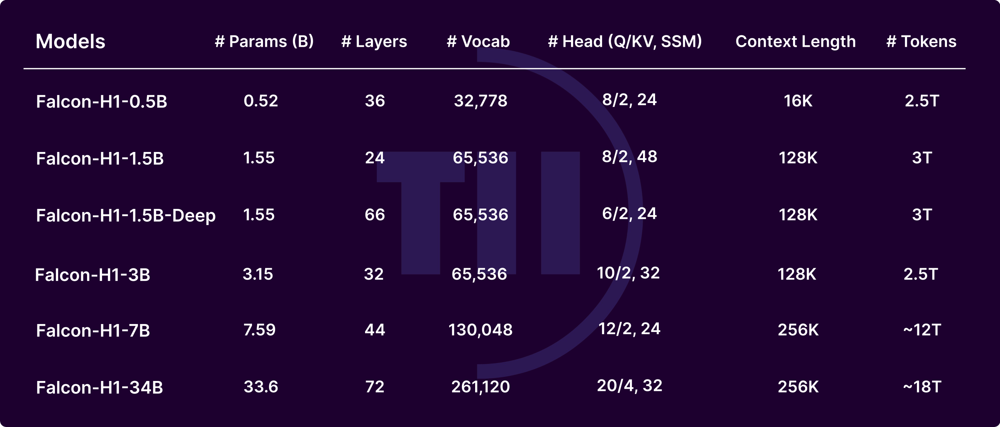

Summary
Falcon-H1 is a family of hybrid-head language models that combine Transformer attention with Mamba-2 State Space Model (SSM) heads in a single parallel architecture. Spanning 0.5B to 34B parameters across more than 30 open-weight checkpoints, the family achieves state-of-the-art performance at every size tier while delivering dramatically better inference throughput than pure Transformer equivalents.
Attention and SSM layers have complementary strengths: attention excels at precise, in-context retrieval while SSMs provide efficient sequence compression and long-range memory with constant-time per-step cost. Falcon-H1 places them in parallel within each block and exposes the attention–SSM head ratio as an explicit design parameter, tuned independently per model size. This structural flexibility, combined with up to 18 trillion tokens of curated training data and a 256K-token context window, enables each variant to punch well above its parameter count.
Crucially, Falcon-H1 was built by systematically revisiting every established practice in LLM development — model design, data strategy, and training dynamics — rather than inheriting conventions from pure-attention predecessors. The result: the 34B model matches or outperforms models up to 70B, the 1.5B-Deep rivals current 7B–10B models, and the 0.5B model performs on par with 2024-era 7B systems. Multilingual support covers 18 native languages, with the tokenizer designed to scale to 100+.
Model Variants
Each size is released in Base and Instruct variants. The 1.5B-Deep configuration uses a deeper but narrower architecture to match the quality of larger models at lower cost.
- Falcon-H1-0.5B — Matches typical 7B models from 2024 at a fraction of the cost.
- Falcon-H1-1.5B — Strong general-purpose model at the 1–2B tier.
- Falcon-H1-1.5B-Deep — Deeper architecture; rivals current 7B–10B models despite 1.5B parameters.
- Falcon-H1-3B — Balanced capability and speed for production workloads.
- Falcon-H1-7B — Flagship mid-size model; state-of-the-art in its class.
- Falcon-H1-34B — Matches or outperforms Qwen3-32B, Qwen2.5-72B, Llama3.3-70B on reasoning, math, and multilingual benchmarks.

Key Contributions
Architecture
Parallel Hybrid-Head Design
Rather than stacking attention and SSM layers sequentially (as in prior hybrid models), Falcon-H1 runs them in parallel within the same block, with their outputs combined before the feed-forward layer. This allows both mechanisms to process the same hidden state at each depth, combining their strengths on every token rather than delegating responsibility by layer position.
Critically, the number of attention heads and SSM heads can be adjusted independently, exposing the attention–SSM ratio as a first-class design parameter. This ratio is tuned per model size during architecture search, enabling each variant to find an optimal efficiency–quality operating point rather than inheriting a fixed recipe from a larger sibling.
The SSM component uses Mamba-2, which supports highly optimized parallel scan kernels and delivers constant per-step compute cost regardless of sequence length. This is what underpins the throughput gains: at long contexts (256K tokens), Falcon-H1 achieves up to 4× input throughput and 8× output throughput vs. pure Transformer models of equivalent quality.
Training Dynamics
Customized μP with 35 Fine-Grained Parameter Groups
Standard Maximal Update Parameterization (μP) assigns trivial unit multipliers to all parameter groups at the proxy (small) model, then relies on width-scaling rules to transfer hyperparameters to larger sizes. For a hybrid architecture with both attention and SSM components — each with distinct gradient dynamics — these coarse groupings are insufficient: SSM recurrent parameters, input projections, and attention weights all behave differently and benefit from distinct learning rates.
Falcon-H1 introduces a customized μP variant that partitions model parameters into 35 fine-grained groups, each with its own multiplier. These multipliers are optimized at the base (proxy) model size and then transferred intact to all six production scales — from 0.5B to 34B — enabling all models to be trained in parallel rather than sequentially. Additionally, the multipliers provide per-block control over gradient magnitude, allowing targeted damping of loss spikes in SSM blocks without disrupting attention layers.
This customization makes Falcon-H1 one of the first large model families to apply μP to a hybrid architecture at scale, and it directly enables the breadth of the release: tuning once and deploying everywhere.
Data & Training Strategy
Anti-Curriculum Training & Memorization Window-Guided Data Reuse
Conventional curriculum learning presents easy, general-domain data first and reserves complex examples for later stages. Falcon-H1 inverts this: complex, high-quality data — including STEM, code, and reasoning-heavy material — is introduced from the very beginning of training. This anti-curriculum approach gives the model more gradient steps on the most demanding content, and empirically yields stronger downstream task performance than a staged approach at equivalent total compute.
Complementing this, the team leverages a precise model of the memorization window: the span of training tokens beyond which previously seen data is effectively forgotten. High-quality curated datasets are repeated across epochs, but repetitions are spaced so they never fall within the model's active memory window. This turns data repetition from a risk into a tool, allowing the same high-value tokens to contribute multiple effective gradient signals without the usual risk of memorization artifacts. Together, these two strategies form a coherent data philosophy: expose the model to hard content early, and let the best data teach it more than once.
Highlights
- Six model sizes from 0.5B to 34B (plus the 1.5B-Deep variant) — 30+ open-weight checkpoints under a permissive license.
- Falcon-H1-34B matches or outperforms Qwen3-32B, Qwen2.5-72B, and Llama3.3-70B on reasoning, math, and multilingual tasks.
- Falcon-H1-1.5B-Deep rivals current 7B–10B models; the 0.5B matches 2024-era 7B systems — each model effectively punches 2× above its parameter count.
- Up to 4× input throughput and 8× output throughput vs. pure Transformer models of equivalent quality, at 256K context length.
- Parallel hybrid architecture with tunable attention–SSM head ratio, optimized independently per model size.
- Customized μP over 35 parameter groups enables simultaneous hyperparameter transfer to all six scales.
- Anti-curriculum training with memorization window-guided data reuse — hard content from day one, high-quality data repeated safely.
- Trained on up to 18 trillion tokens; native support for 18 languages, tokenizer extensible to 100+.